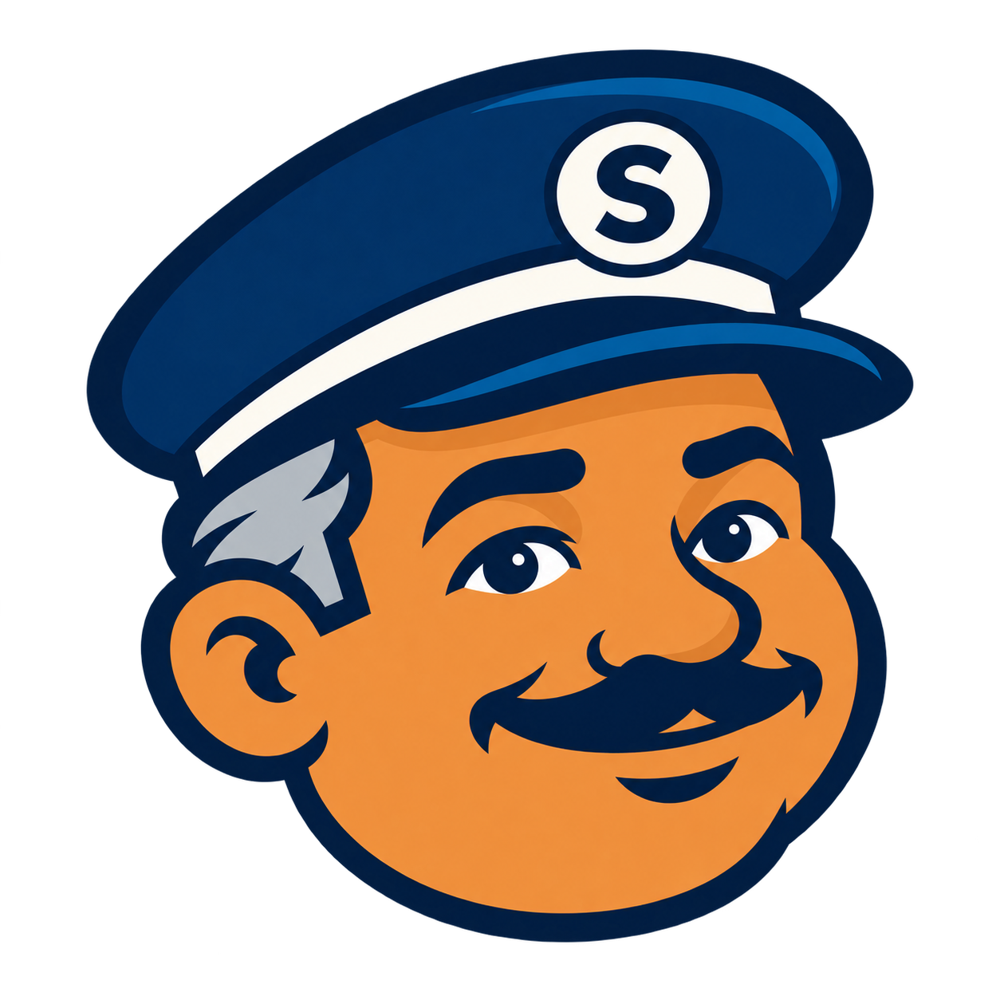
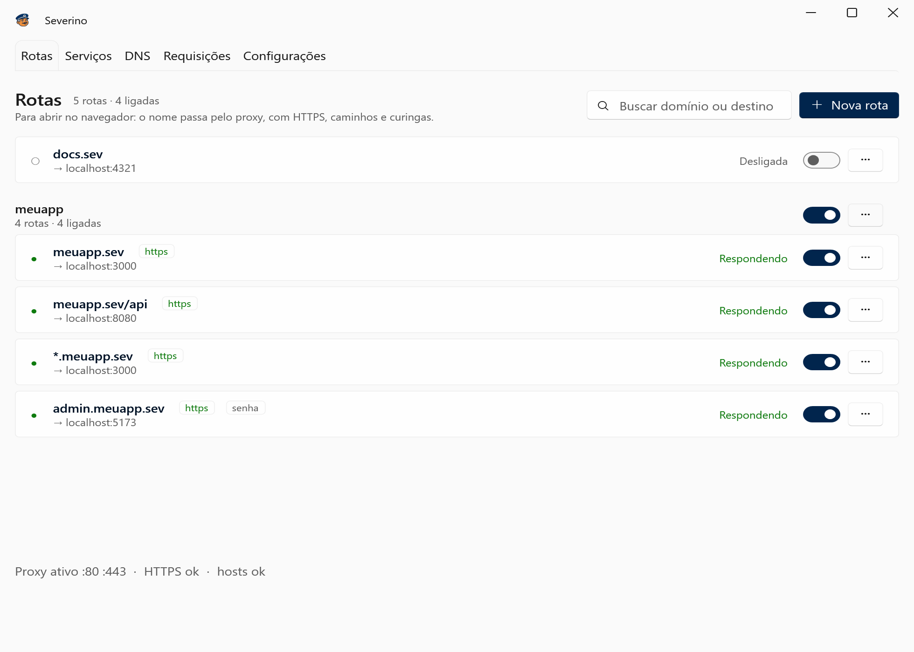
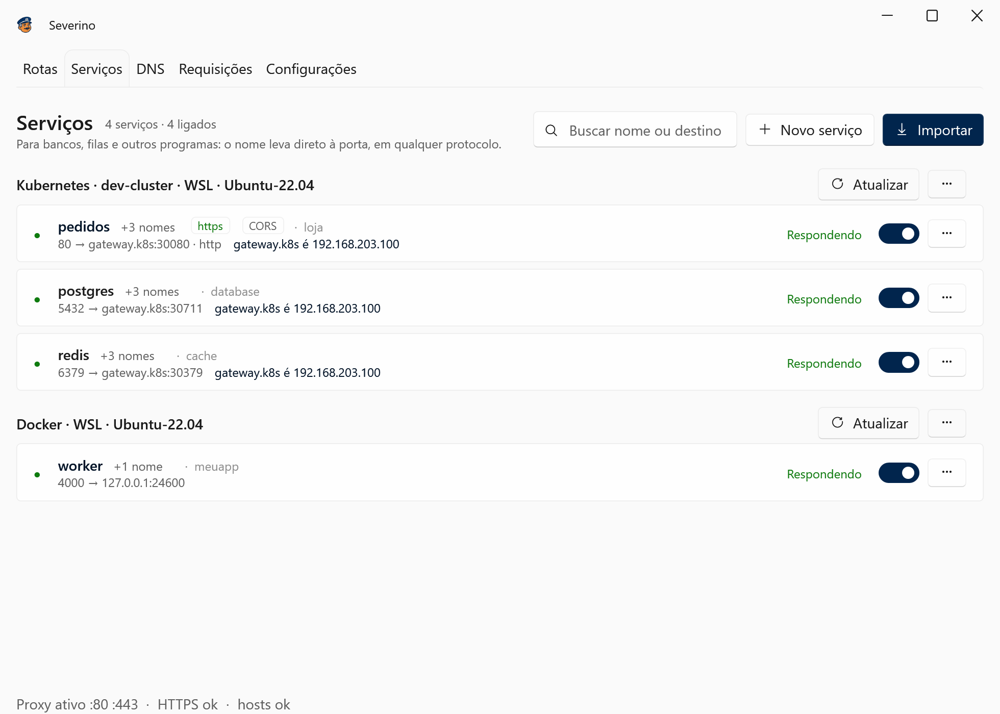
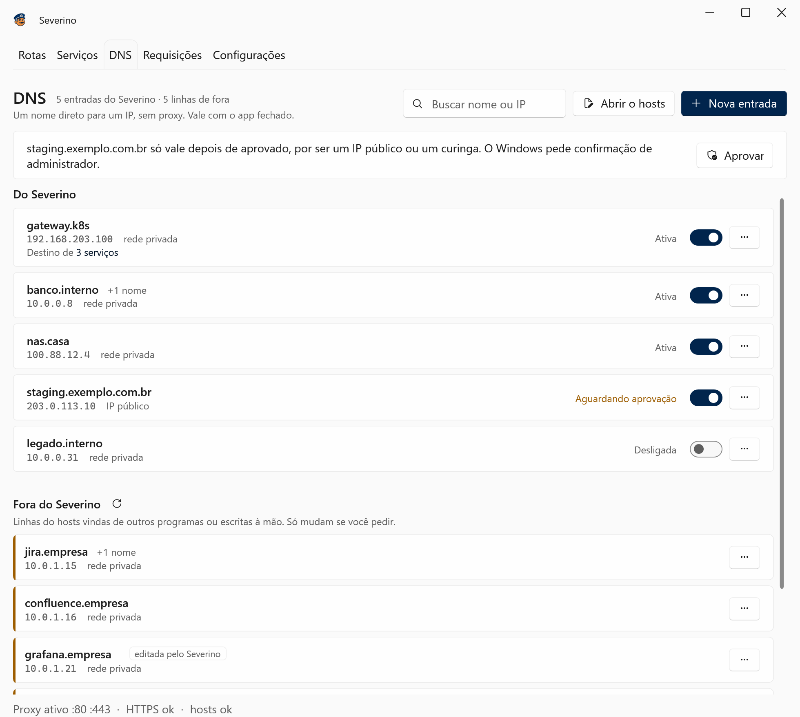

localhost:3000
meuapp.sev
O Severino dá um nome para cada app de dev.
Cada app, um nome no quadro.
Portaria
meuapp.sev3000
meuapp.sev/api8080
pedidos.loja80
postgres.database5432
HTTPS de verdade, sem aviso do navegador.
No Windows, no WSL, no Docker e no cluster.
Windows
meuapp.sev → localhost:3000
WSL
~$ curl http://pedidos.loja
Docker
worker:4000 → container
Kubernetes
postgres.database:5432
Rotaspara o navegador
Serviçosbancos, filas e o resto
DNSoutras máquinas



Severino
O porteiro dos seus apps de dev.
Grátis para Windows 10 e 11
lucassm02.github.io/severino